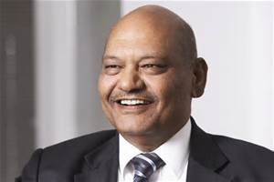

He was born and brought up in Patna, India. He studied at Miller High School but quit school at 15 to join his father's business, making aluminium conductors.At 19, he left Pune for Mumbai (then Bombay) to explore career opportunities.
In the mid-1970s, he began trading in scrap metal, collecting it from cable companies in other states and selling it in Mumbai.In 1976, Anil Agarwal acquired Shamsher Sterling Corporation, a manufacturer of enameled copper, among other products, with a bank loan. For the next 10 years, he ran both businesses.
In 1986, he set up a factory to manufacture jelly-filled cables, creating Sterlite Industries. He soon realized that the profitability of his business was volatile, fluctuating with the prices of his raw materials: copper and aluminium. So he decided to control his input costs by manufacturing the metals instead of buying them.
In 1993, Sterlite Industries became the first private sector company in India to set up a copper smelter and refinery. In 1995, Sterlite Industries acquired Madras Aluminium, a ‘sick’ company that had been shut down for 4 years and held by the Board for Industrial and Financial Reconstruction (BIFR). The next step of the backward integration process seemed natural: mining.
His first opportunity came when the government announced a disinvestment program. In 2001, he acquired 51 percent in Bharat Aluminium Company (BALCO), a public sector undertaking; in the very next year, he acquired a majority stake (nearly 65 per cent) in state-run HZL. Both the companies were considered sleepy and inefficient mining firms.
To access international capital markets, Anil Agarwal and his team incorporated Vedanta Resources Plc in 2003. At the time of its listing, Vedanta Resources Plc, was the first Indian firm to be listed on London Stock Exchange, on December 10, 2003,[15] Vedanta Resources became the parent company of the group through a process of internal restructuring of group companies and their shareholding.
In 2004 Vedanta Resources Plc announced a global bond offering and acquired Konkola Copper Mines in Zambia, Africa. In 2007, Vedanta Resources acquired a controlling stake in Sesa Goa Limited, India’s largest producer-exporter of iron ore,and in 2010, the company acquired South African miner Anglo American’s portfolio of zinc assets in Namibia, Ireland and South Africa.The next year, Vedanta Resources acquired controlling stake in Cairn India, India’s largest private sector oil-producing firm. The merger of Sesa Goa and Sterlite Industries was announced in 2012, as part of the Vedanta Group’s consolidation.
Vedanta Resources, headquartered in London, is a globally diversified natural resources conglomerate, with interests in zinc, lead, silver, copper, iron ore, aluminium, power generation, and oil and gas. The greatest share of its assets, however, is in India; Agarwal lives in London, but as he has reiterated often, his heart and soul are in India. His philanthropic activities are targeted at eradicating poverty, by creating jobs and contributing to India’s GDP growth through his business operations.
Vedanta was stripped of international safety awards after it was found it failed to declare its involvement one of the worst industrial accidents in India's history